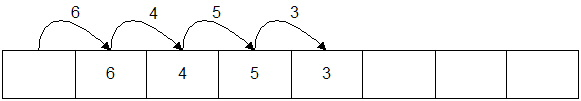
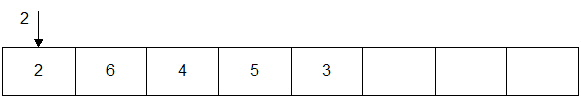

- You are given the header file Vector.h (HTML)
to start with, and a partial implementation in Vector.cpp (HTML)
to help get you started. There are 11 public methods so far, and 9 of them are trivial. The ones
in blue have already been implemented for you. (You're welcome!)
- Default constructor
- Destructor
- clear
- operator[] (non-const)
- operator[] (const)
- empty
- size
- capacity
- allocations
The remaining 2 public methods are a little more involved:
- push_front (You need to shift all elements over one position, and you may need to grow the array first.)
- push_back (No shifting, but if the array is full, you will need to grow the array first.)
- Your task is to implement all of the methods that are defined in the header file. There are some private fields already
defined, and you shouldn't need any others. There are also some simple methods already implemented.
- Start with the push_back method and try to pass the first test. Once you get push_back working, the rest will
come pretty quickly.
- Probably, the most difficult method at this point is the grow method. push_back calls this method, so
you will need to implement it to get push_back to work.
- Growing a vector/array simply means allocating another array that is twice the size of the original array, copying the elements from the orginal array into the new array, and then deleting the original array.
Growing a vector:
- Original vector:

- After growing (allocate another array that is twice as large):

- Copy existing elements from original array into new array using a loop of some kind.
Do not use memcpy or anything like that.

- Don't forget: Free the memory from the original array or you'll have a memory leak.
Pushing to the front: Example: push_front(2);
- Original vector:

- Copy all elements to the right one slot starting with the right-most element first:

- Put the value in the open slot:

- Make sure there is enough room in the array before shifting all of the elements. You may have to grow the array first.
Here is some test code in driver.cpp (HTML). Command lines:
To run a single test, provide the number on the command line. Example:g++ -o gnu -O -Wall -Wextra -Werror -ansi -pedantic driver.cpp Vector.cpp
cl /EHa /MTd /W4 /WX /Za /Fems.exe driver.cpp Vector.cpp
will run test #5 (calls the TestALot1 function). If you don't provide any number, all tests will be run.gnu 5
Output from all functionsDon't forget to add --strip-trailing-cr to the diff program to ignore the newlines between GNU's output and the other compilers.